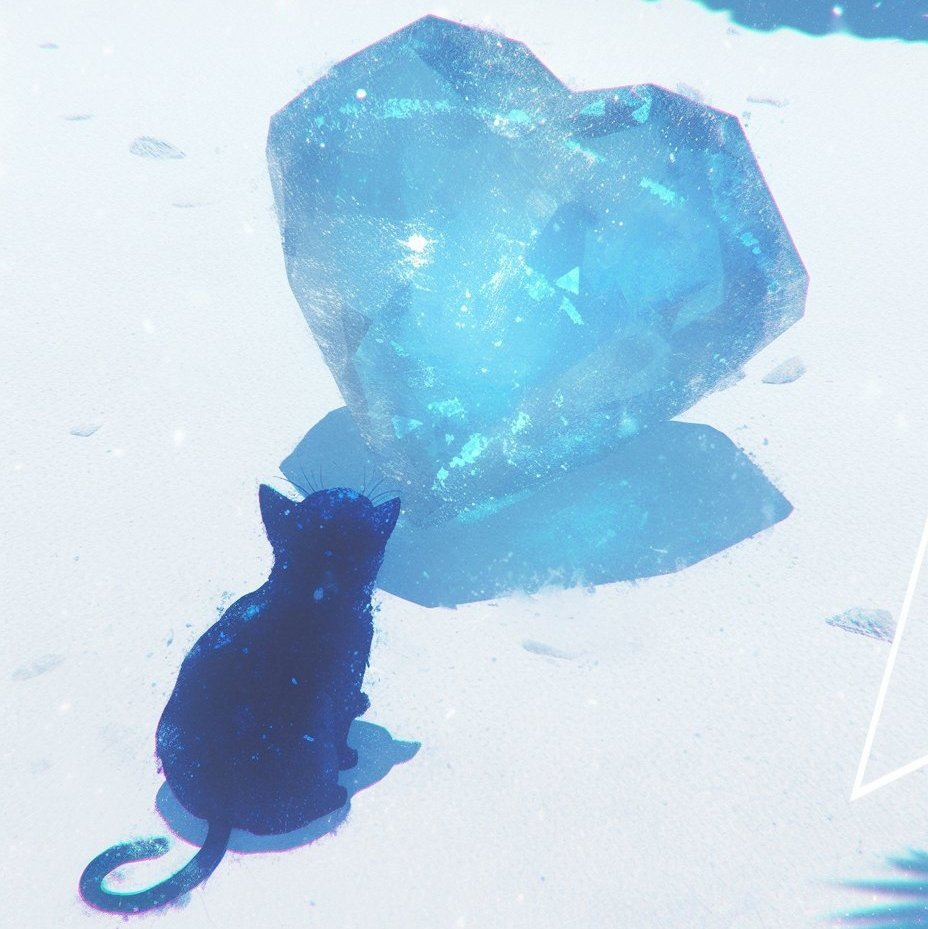

关于麦青春
你好，我是MaxCaulfield，你也可以叫我麦青春。
欢迎来到我的个人blog——麦青春的麦田
我是谁？
我是一个学生，嗯，起码现在还是；我还是个AI狂热教徒，力求在工业革命中站稳脚跟；我还↑是↓个Coder，虽然绝大多数工作都是Vibe Coding但是成果已经远大于我的能力了，所以，还算满意，嗯。
为什么要做这个个人网站？
请参见《为什么要做这个个人网站》，但是注意下上服务器之后那个项目地址被用来放MaxCaulfield.xyz了，但是这只是临时性的我会改回来的。
梦想是什么？
为了良知！...*啪。我错了，能闪耀自己的光芒就可以了。
为什么叫MaxCaulfield？
MaxCaulfield这个名字来源于游戏《Life is Strange 奇异人生》，是个非常非常好的游戏，自己觉得也好听就拿来用了，没想到直接成了我的代名词。
为什么叫麦青春？
因为MaxCaulfield的Max，麦克斯，然后在寒假参加比赛的时候写公众号首次用了麦青春很青春这个名字，觉得超级好听且美丽，就一直沿用了。
为什么博客叫麦青春的麦田？
请看↓
有没有个人签名？
那肯定有啊而且超好看的捏
怎么联系你？
你可以通过QQ邮箱和BiliBili联系主包。
你可以点击图标进行联系
能看到这里真是谢谢你呀，希望你能喜爱这片充满生机的麦田，愿你能在这片田地中得到你想要的内容捏。 ヾ(๑╹◡╹)ﾉ"
别忘了多来麦田里看看啊啊啊啊啊 ~(≧▽≦)/~